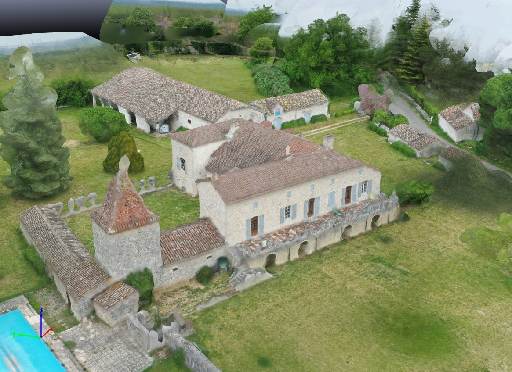

Photogrammétrie par Drone
Jour 3 — Corriger, modéliser en 3D & exploiter dans CloudCompare
Débrief · Vol 3D n°2 · Maillage · Cubature · ComparaisonLe programme du jour
1. Débrief
- Chaque binôme présente son modèle 3D n°1
- Les 10 pièges de la modélisation
- Du symptôme à la cause
2. Vol 3D n°2
- Les stratégies de vol 3D
- Chaque binôme corrige son plan
- Vol sur le terrain
3. Exploiter
- Metashape : maillage et texture
- CloudCompare : mesures, cubature
- Comparaison chiffrée n°1 / n°2
- Rapport client, évaluation
Débrief : les pièges de la modélisation 3D
Vos modèles 3D n°1 à l'écran : ce qui a marché, ce qui a raté, et pourquoi. Puis les 10 pièges classiques et leurs solutions.
Chaque binôme présente son modèle
Pièges 1 et 2 : couverture et hauteur
1 Couverture insuffisante
Symptôme : trous, zones non reconstruites, photos non alignées.
Cause : recouvrement trop faible, parties de l'objet vues sur une seule photo.
Solution : ≥ 80 % frontal et ≥ 70 % latéral, davantage dans les zones complexes.
2 Mauvais couple FOV / hauteur
Symptôme : détails flous ou « fondus », arêtes arrondies.
Cause : trop haut ou trop loin : GSD trop grand pour l'objet.
Solution : fixer le GSD voulu sur l'objet, en déduire la distance de vol. Petits objets : plus près, plus de photos.
Pièges 3 et 4 : obturateur et météo
3 Obturateur électronique en mouvement
Symptôme : géométrie faussée, alignement difficile, modèle « tordu ».
Cause : lecture ligne par ligne du capteur pendant que le drone avance.
Solution : obturateur mécanique ; sinon voler lentement ou en arrêt photo, et « Ajuster le rolling shutter » dans Metashape.
4 Conditions météo inadaptées
Symptôme : ombres « collées » dans la texture, trous dans les zones sombres, reflets.
Cause : soleil rasant ou changeant, vent (mouvement du drone et de la végétation), pluie.
Solution : lumière douce et diffuse (ciel voilé), vent faible, soleil haut en cas de grand beau temps.
Pièges 5 et 6 : angles de vue et GCP
5 Angles de prise de vue insuffisants
Symptôme : toitures parfaites mais façades vides, déformées ou étirées.
Cause : photos uniquement au nadir : les faces verticales ne sont vues qu'en biais extrême.
Solution : combiner nadir + obliques (nacelle vers −45° à −60°), orbites autour de l'objet.
6 Mauvaise gestion des GCP
Symptôme : modèle bien formé mais décalé, basculé ou mal à l'échelle.
Cause : pas de GCP, GCP regroupés, mal pointés ou mal nommés.
Solution : GCP répartis sur toute la zone, pointés sur plusieurs photos, et des points de contrôle.
Pièges 7 et 8 : vols multiples et exposition
7 Raccord insuffisant entre plusieurs vols
Symptôme : le modèle se coupe en deux blocs, ou une marche apparaît au raccord.
Cause : chaque vol couvre sa zone sans recouvrement avec le précédent.
Solution : reprendre chaque vol largement sur la zone précédente (reprise de mission au point d'arrêt).
8 Exposition automatique
Symptôme : texture en patchwork, couleurs différentes selon les faces, zones brûlées ou bouchées.
Cause : l'appareil change l'exposition d'une photo à l'autre (ciel, façade à l'ombre…).
Solution : régler et verrouiller l'exposition avant le vol à partir d'une photo test ; vitesse rapide fixe.
Pièges 9 et 10 : positionnement et logiciel
9 Précision GNSS du drone insuffisante
Symptôme : modèle impossible à superposer à un plan, deux levés qui ne se recalent pas.
Cause : géotags métriques, perte du fix RTK, mauvais système déclaré.
Solution : RTK fixé sur toute la mission (ou PPK), point connu, et GCP / points de contrôle.
10 Logiciel ou réglages inadaptés
Symptôme : modèle grossier, détails fins supprimés, temps de calcul démesurés.
Cause : qualité trop basse ou trop haute, filtrage inadapté à l'objet, mauvais système.
Solution : logiciel professionnel (Metashape, Pix4D, DJI Terra…) et réglages adaptés à l'objet et au livrable.
Bonus : les surfaces qui piègent le logiciel
La grille de diagnostic
| Je vois… | Cause probable | Je corrige… |
|---|---|---|
| Photos non alignées | Recouvrement, flou, surface uniforme | au vol (recouvrement) ou en ajoutant des repères manuels |
| Trous dans les façades | Pas d'obliques, angle de nacelle | au vol : obliques, orbites |
| Surface « fondue », arêtes molles | GSD trop grand, flou de bougé, filtrage | au vol (plus près, plus lent) et au traitement (filtrage Léger) |
| Texture en patchwork | Exposition automatique, lumière changeante | au vol : exposition verrouillée, créneau homogène |
| Modèle décalé ou basculé | Pas de GCP, géotags faux, mauvais système | au traitement : repères, paramètres de référence |
| Marche au milieu du modèle | Raccord entre vols insuffisant | au vol : reprise avec recouvrement |
| Points flottants, bruit | Ciel, reflets, eau, objets mobiles | au traitement : nettoyage, filtrage par confiance |
Réussir son vol 3D : le vol n°2
Les trajectoires adaptées à chaque objet, le calcul de la distance de vol, puis votre plan de vol corrigé et le vol 3D n°2.
Trois trajectoires, trois objets
Double grille + obliques
Deux grilles croisées, nacelle inclinée (−45° à −60°), éventuellement une grille nadir en plus.
Pour : sites étendus, quartiers, carrières avec fronts, toitures + façades.
Orbites à plusieurs hauteurs
Cercles autour de l'objet (point d'intérêt), une photo tous les ~10° (36 par tour), 2 à 3 hauteurs, nacelle adaptée.
Pour : objets isolés : château d'eau, maison, pylône, monument, stock.
Façade en lignes
Lignes verticales ou horizontales parallèles à la façade, caméra face au mur, distance constante.
Pour : façades, ponts, murs, falaises, ortho de façade.
Le GSD se calcule sur l'objet
En 3D, la « hauteur » de la formule du GSD devient la distance entre la caméra et la surface photographiée.
| Distance à la façade | GSD | Usage |
|---|---|---|
| 10 m | 0,3 cm | Fissures, joints, détails |
| 20 m | 0,5 cm | Relevé de façade, patrimoine |
| 40 m | 1,1 cm | Volume de bâtiment, contexte |
Les réglages d'un bon vol 3D
Recouvrement
≥ 80 % entre photos voisines, dans toutes les directions. Une photo tous les ~10° en orbite.
Angles
Nadir pour le dessus, −45° à −60° pour les faces, 0° face aux façades. Varier, sans changer brutalement.
Exposition
Réglée sur une photo test puis verrouillée. Vitesse rapide (1/1000 s), ISO bas.
Vitesse
Lente : 2 à 5 m/s près de l'objet. Ou arrêt à chaque photo en vol manuel.
À vous : corrigez votre plan de vol
TP en binômes · 20 min + vol
Règle du vol n°2
Même objet, même batterie, même durée : seule la méthode change. La comparaison n°1 / n°2 n'en sera que plus parlante.
Traitement
Mêmes réglages Metashape que pour le vol n°1, plus des repères si des GCP sont visibles autour de l'objet.
Metashape : maillage et texture
Construire, nettoyer et texturer le modèle 3D, l'exporter et le mesurer.
Construire et nettoyer le maillage
| Données source | Cartes de profondeur |
| Type de surface | Arbitraire (3D) · Champ de hauteur (2.5D) pour un terrain |
| Qualité | Haute ou Moyenne |
| Nombre de faces | Haute, ou personnalisé selon l'usage |
| Interpolation | Activée (par défaut) |
Nettoyer
- Sélection graduelle › Taille des composants connectés : supprimer les petits morceaux flottants
- Outils de sélection + Suppr : retirer le ciel, les véhicules
- Fermer les trous… si l'objet doit être « étanche » (impression 3D, volume)
Alléger
Décimer le maillage… : réduire le nombre de faces pour la visualisation web ou l'export vers d'autres logiciels.
Texturer, mesurer, exporter
- Mode de mappage : Générique · Mode de fusion : Mosaïque
- Taille de la texture : 8192 px (ou plusieurs textures pour un gros objet)
- Activer le remplissage des trous et le filtre fantôme
Mesurer dans Metashape
Règle (distances), et clic droit sur une forme dessinée › Mesurer aire et volume…
Exporter
Exporter le modèle… : OBJ, FBX, PLY ; Construire un modèle tuilé pour une diffusion web fluide (Cesium 3D Tiles).

CloudCompare : mesurer, cuber, comparer
Le logiciel libre de référence pour exploiter les nuages de points : import, nettoyage, mesures, calcul de volumes et comparaison de deux modèles.
CloudCompare en bref
- Logiciel libre et gratuit, né d'une collaboration avec EDF R&D (cloudcompare.org)
- Nuages de points et maillages : LAS/LAZ, E57, PLY, OBJ…
- Interface en anglais : menus Edit, Tools, Plugins
Schéma simplifié de l'interface de CloudCompare
Importer un nuage : le « Global shift »
À l'import d'un LAS en CC50 ou en Lambert 93, CloudCompare propose de décaler les coordonnées.
- Les coordonnées sont très grandes (E ≈ 1 614 740 m, N ≈ 9 293 145 m)
- Pour les calculs et l'affichage, CloudCompare travaille mieux sur de petites valeurs
- Il retire un décalage à l'import et le remet à l'export
Boîte de dialogue simplifiée
Les outils de base
Segmenter
Icône ciseaux : dessiner un polygone, garder l'intérieur ou l'extérieur. Pour isoler un stock, un bâtiment.
Mesurer
Point picking : coordonnées d'un point, distance entre deux points, angle entre trois points.
Nettoyer
Tools › Clean › SOR filter : supprime les points isolés (bruit). Edit › Subsample : alléger le nuage.
Profils et coupes
Tools › Segmentation › Cross Section : tranches pour lire un profil de terrain ou de façade.
Rasteriser
Tools › Projection › Rasterize : transformer un nuage en grille d'altitudes (MNE) et en courbes de niveau.
Recaler
Tools › Registration : Align (point pairs picking) puis Fine registration (ICP).
Calculer le volume d'un stock
Comparer deux modèles
À vous : exploitez vos données
TP en binômes · 1 h 30
1. Cubature
- Ouvrir le nuage du vol ortho
- Isoler un tas, un talus ou une butte
- Calculer son volume en 2.5D
- Comparer avec Metashape
2. Comparaison n°1 / n°2
- Ouvrir les deux modèles 3D
- Recaler si nécessaire (Align + ICP)
- Calculer les distances C2C
- Repérer les zones en défaut du vol n°1
3. Mesures
- Une longueur et une hauteur de l'objet
- Comparer avec une mesure au mètre ou au GNSS
- Capturer les vues pour le rapport
Question
Vous ouvrez deux nuages du même chantier en CC50 dans CloudCompare, mais ils apparaissent à des kilomètres l'un de l'autre. Cause probable ?
Question
Pour connaître ce qui a été extrait d'un stock entre deux inventaires, quel « sol » choisissez-vous dans le calcul 2.5D ?
Livrer au client et conclure
Le rapport de mission, les bonnes pratiques de livraison, l'évaluation et la suite de votre parcours.
Le rapport de mission
Annexes
- Rapport de traitement Metashape (PDF)
- Fichier des points d'appui et de contrôle
- Liste des fichiers livrés
Livrer proprement
- Noms de fichiers explicites et datés
- Un « lisez-moi » : système, unités, contenu
- Transfert sécurisé, archivage du projet complet
La chaîne complète, en un coup d'œil
Pour aller plus loin
QGIS
SIG libre : ouvrir les orthos et MNE, superposer aux données IGN, produire des plans et des courbes de niveau.
Données IGN ouvertes
Orthophotos, LiDAR HD, MNT : la référence gratuite pour préparer et contrôler vos levés (cartes.gouv.fr).
Multispectral
Indices de végétation (NDVI, NDRE) pour l'agriculture et l'environnement.
Autres logiciels
DJI Terra, Pix4D, RealityScan… mêmes principes, autres interfaces : vous savez désormais ce que fait le logiciel.
LiDAR embarqué
Pour le terrain sous végétation et les corridors : complément naturel de la photogrammétrie.
Pratiquer
Refaire un levé complet sur un site connu, et comparer à un plan de géomètre : le meilleur entraînement.
Test final de connaissances, évaluation de vos livrables pratiques (orthophoto, rapport, cubature, comparaison) et questionnaire de satisfaction.
Une attestation de formation est remise à chaque stagiaire.
Crédits des illustrations
- Modèles 3D, nuages de points, orthophotos et positions de caméras : Dronexperts
- Schémas des interfaces Metashape et CloudCompare : représentations simplifiées Dronexperts
- Agisoft Metashape est une marque d'Agisoft LLC ; CloudCompare est un logiciel libre (cloudcompare.org)
- Schémas, pictogrammes et illustrations des pièges : Dronexperts
Merci !
Bons vols, et bonnes mesures.